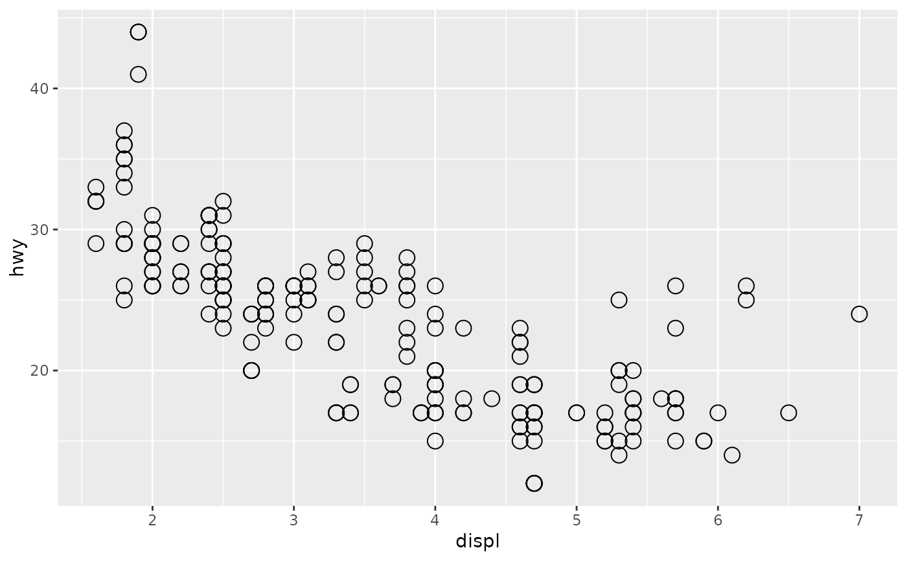

All geom_*() functions (like geom_point()) return a layer that
contains a Geom* object (like GeomPoint). The Geom*
object is responsible for rendering the data in the plot.
Details
Each of the Geom* objects is a ggproto() object, descended
from the top-level Geom, and each implements various methods and
fields. The object and its parameters are chaperoned by the Layer class.
Compared to Stat and Position, Geom is a little
different because the execution of the setup and compute functions is
split up. setup_data runs before position adjustments, and
draw_layer() is not run until render time, much later.
When creating a new Geom class, you may want to consider override one or more of the following:
The
required_aesanddefault_aesfields.The
setup_data()andsetup_params()functions.Either the
draw_panel()ordraw_group()function.The
draw_keyfield.
Fields
required_aesA character vector naming aesthetics that are necessary to render the geom.
non_missing_aesA character vector naming aesthetics that will cause removal if they have missing values.
optional_aesA character vector naming aesthetics that will be accepted by
layer(), but are not required or described in thedefault_aesfield.default_aesA mapping of default values for aesthetics. Aesthetics can be set to
NULLto be included as optional aesthetic.rename_sizeA scalar boolean: whether to rename
sizeaesthetics tolinewidth.extra_paramsA character vector of parameter names in addition to those imputed from the
draw_panel()ordraw_groups()methods. This field can be set to include parameters forsetup_data()orhandle_na()methods. By default, this only contains"na.rm".draw_keyA function generating a single legend glyph for the geom. Typically one of the functions prefixed by
draw_key_.setup_paramsDescription
A function method for modifying or checking the parameters based on the data. The default method returns the parameters unaltered.
Usage
Geom$setup_params(data, params)Arguments
dataA data frame with the layer's data.
paramsA list of current parameters.
Value
A list of parameters
setup_dataDescription
A function method for modifying or checking the data prior to adding defaults. The default method returns data unaltered.
Usage
Geom$setup_data(data, params)Arguments
dataA data frame with the layer's data.
paramsA list of parameters coming from the
setup_params()method.
Value
A data frame with layer data
use_defaultsDescription
A function method for completing the layer data by filling in default aesthetics that are not present. It is not recommended to use as an extension point.
It takes on these tasks:
Evaluation of default aesthetics from the
default_aesfield.Handling the
after_scale()/stage(after_scale)stage of delayed evaluation.Fill in fixed, unmapped aesthetics passed as parameters.
Usage
Geom$use_defaults(data, params, modifiers, default_aes, theme, ...)Arguments
dataA data frame of the layer's data, coming from the
setup_data()method. Can beNULL, in which case resolved defaults should be returned.paramsA list of fixed aesthetic parameters
modifiersA mapping with delayed evaluations.
default_aesA mapping with default aesthetics.
theme
Value
A data frame with completed layer data.
handle_naDescription
A function method to handle missing values. The default method will remove rows that have missing values for the aesthetics listed in the
required_aesandnon_missing_aesfields. It is not recommended to use this method as an extension point.Usage
Geom$handle_na(data, params)Arguments
dataA data frame with the layer's data coming from the
update_defaults()method.paramsA list of parameters coming from the
setup_params()method
Value
A data frame with layer data
draw_layerDescription
A function method orchestrating the drawing of the entire layer. The default method splits the data and passes on drawing tasks to the panel-level
draw_panel()method. It is not recommended to use this method as an extension point.Usage
Geom$draw_layer(data, params, layout, coord)Arguments
dataA data frame with the layer's data.
paramsA list of parameters
layoutA completed
<Layout>ggproto object.coordA
<Coord>ggproto object.
Value
A list of grobs, one per panel
draw_panel,draw_groupDescription
A function method orchestrating the drawing of the layer for a single panel or group. The default
draw_panel()method splits the data into groups, passes on the drawing tasks to the group-leveldraw_group()method and finally assembles these into a single grob. The defaultdraw_groupmethod is not implemented.Usage
Geom$draw_panel(data, panel_params, coord, ...) Geom$draw_group(data, panel_params, coord, ...)Arguments
dataA data frame with the layer's data.
panel_paramsA list of per-panel parameters constructed by
Coord$setup_panel_params(). This should be considered an opaque data structure that is just passed along when calling coord methods.coordA
<Coord>ggproto object. To correctly scale the position data, one should always callcoord$transform(data, panel_params). When working with non-linear coordinate systems, data should be converted to fit a primitive geom (e.g. point, path or polygon) and passed on to the corresponding draw method for munching....Reserved for extensions. By default, this is passed on to the
draw_group()method.
Value
A single grob or
zeroGrob()when there is nothing to draw. Fordraw_panel()this can be a gTree holding individual grobs from thedraw_group()method.parametersDescription
A function method for listing out all acceptable parameters for this geom.
Usage
Geom$parameters(extra)Arguments
extraA boolean: whether to include the
extra_paramsfield.
Value
A character vector of parameter names.
aestheticsDescription
A function method for listing out all acceptable aesthetics for this geom.
Usage
Geom$aesthetics()Value
A character vector of aesthetic names.
Conventions
The object name that a new class is assigned to is typically the same as
the class name. Geom class names are in UpperCamelCase and start with the
Geom* prefix, like GeomNew.
A constructor function is usually paired with a Geom class. The constructor
wraps a call to layer(), where e.g. layer(geom = GeomNew). The constructor
function name is formatted by taking the Geom class name and formatting it
with snake_case, so that GeomNew becomes geom_new().
See also
The new geoms section of the online ggplot2 book.
Run vignette("extending-ggplot2"), in particular the "Creating a
new geom" section.
Other Layer components:
Layer-class,
Position,
Stat
Examples
# Extending the class
GeomSimplePoint <- ggproto(
"GeomSimplePoint", Geom,
# Fields
required_aes = c("x", "y"),
draw_key = draw_key_point,
# Methods
draw_panel = function(data, panel_params, coord) {
data <- coord$transform(data, panel_params)
grid::pointsGrob(data$x, data$y)
}
)
# Building a constructor
geom_simple_point <- function(mapping = NULL, data = NULL, stat = "identity",
position = "identity", ..., na.rm = FALSE,
show.legend = NA, inherit.aes = TRUE) {
layer(
mapping = mapping, data = data,
geom = GeomSimplePoint, stat = stat, position = position,
show.legend = show.legend, inherit.aes = inherit.aes,
params = list(na.rm = na.rm, ...)
)
}
# Use new geom in plot
ggplot(mpg, aes(displ, hwy)) +
geom_simple_point()
